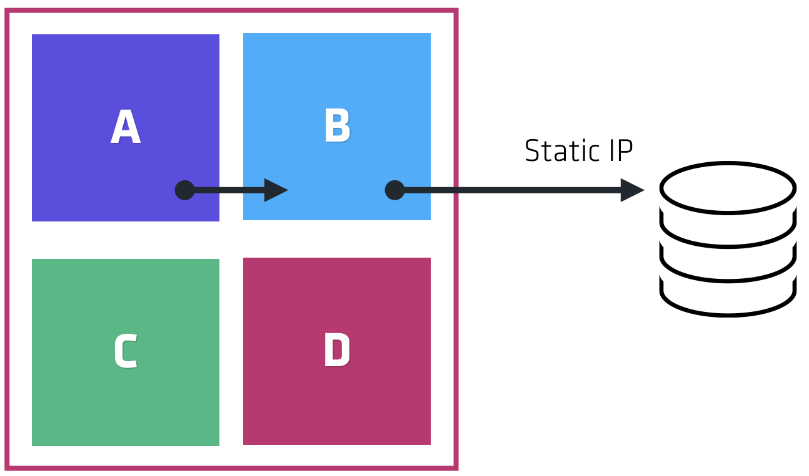

Consul Service Mesh
Distributed service networking layer to connect, secure, and configure services.
Christie Koehler
City HUG - Month Year

Presenter Name
Title, Affiliation
@socialmedia
HashiCorp Suite
From Monoliths to Microservices
A trend toward dynamic infrastructure
Monoliths: How do they even work?
Monolith
 Many subsystems deployed as a single application.
Many subsystems deployed as a single application.
Monolith
 Subsystem calls stay within node. No network calls.
Subsystem calls stay within node. No network calls.
Monolith

Static IP addressing typical for network calls.
Monolith
 To scale, deploy many copies with load balancer.
To scale, deploy many copies with load balancer.
Monolith
Firewalls for security.
What about Microservices?
Microservices
 Subsystems now deployed separately. More agile.
Subsystems now deployed separately. More agile.
Microservices
Agility comes with new operational challenges.
Microservices
 e.g., Static addressing difficult to scale with multiplicity of instances.
e.g., Static addressing difficult to scale with multiplicity of instances.
Microservices
 Load balancer anti-pattern.
Load balancer anti-pattern.
Additional challenges
Clouds & Containers
- Dynamic IP Addresses
- Higher Failure Rate
- Ephemeral Infrastructure
- Complex Network Topology
Service Mesh
Service Discovery

Service Segmentation
Service Configuration
About Consul
- Launched in 2014
- 12K+ GitHub Stars
- 1M+ Downloads monthly
- Customers running 50,000+ agents
Consul Basics
- single binary, run in client or server mode
- agent runs on every single node
- servers elect a leader
- requests forwarded via local client

Service Mesh
Service Discovery
Service Segmentation
Service Configuration
Service Discovery
Services register themselves in a central registry.
Service Discovery
Services query registry for healthy instances of upstream services.
Service Discovery
Downstream service connects directly to upstream service
Service Discovery
Consul acts like a dynamic registry.
Service Registration
Register services (IP + port) via config files or API
service {
name = "redis"
port = 8000
tags = ["primary","v1]
}
Service Registration
Register services (IP + port) via config files or API
$ cat redist-api.json
{
"ID": "redis1",
"Name": "redis",
"Tags": [
"primary",
"v1"
],
"Port": 8000,
"Meta": {
"redis_version": "4.0"
}
}
$ curl --request PUT --data @redis-api.json \
http://127.0.0.1:8500/v1/agent/service/register
Service Discovery using DNS
Perform load balancing via DNS result shuffling
$ dig global.redis.service.consul
; <<>> DiG 9.8.3-P1 <<>> slave.redis.service.consul
; (3 servers found)
;; global options: +cmd
;; Got answer:
;; ->>HEADER<<- opcode: QUERY, status: NOERROR, id: 9046
;; flags: qr aa rd; QUERY: 1, ANSWER: 1, AUTHORITY: 0, ADDITIONAL: 0
;; WARNING: recursion requested but not available
;; QUESTION SECTION:
;global.redis.service.consul. IN A
;; ANSWER SECTION:
global.redis.service.consul. 0 IN A 10.1.10.38
Service Discovery using HTTP
$ curl http://localhost:8500/v1/catalog/service/redis
[
{
"ID": "52f73400-a352-80d2-9624-e70cc9996762",
"Node": "consul-client-2",
"Address": “10.1.10.38",
"Datacenter": "dc1",
"ServiceName": "redis",
"ServiceTags": [
“global",
],
"ServiceAddress": "10.1.10.38",
"ServicePort": 24815,
"ModifyIndex": 31,
…
Health Monitoring
- Gossip layer provides liveness health check for nodes
- Agent runs health check locally
- Only state changes pushed to Consul servers
- Removes unhealthy nodes from service discovery layer
- Many types of checks available including Nagios-compatible scripts, Docker, HTTP and TCP
Health Checks
Create custom scripts with circuit breakers
{
"check": {
"id": "mem-util",
"name": "Memory utilization",
"script": "/usr/local/bin/check_mem.py",
"interval": "10s"
}
}
WebUI